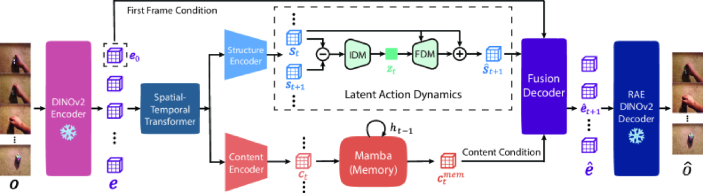

Why it matters왜 중요한가
Abstract actions and sharp video have long been a zero-sum fight. DiLA argues they were never enemies — they just needed separate channels.
추상적 행동과 선명한 영상은 오랫동안 제로섬 싸움이었다. DiLA는 둘이 애초에 적이 아니었고, 단지 채널을 나눠주면 된다고 말한다.
World models that learn actions from raw video are how we escape the scarcity of action-labeled robot data. But the standard recipe forces a choice: a VQ or variational bottleneck makes latent actions clean and transferable, yet it distorts the latent manifold and degrades generation; loosen it and the "action" starts smuggling in textures and colors instead of pure motion. Prior work mostly picked abstraction and threw away the generator, training a separate diffusion model in a second stage. DiLA reframes the problem as disentanglement: if appearance has its own pathway, the predictive bottleneck no longer has to compromise — it can keep only dynamics in the action, because everything else has somewhere else to live.
영상에서 행동을 배우는 월드 모델은, 비싼 행동 라벨 데이터의 희소성에서 벗어나는 길이다. 그러나 표준 레시피는 선택을 강요한다 — VQ/변분 병목은 잠재 행동을 깔끔하고 전이 가능하게 만들지만 잠재 매니폴드를 왜곡해 생성 품질을 떨어뜨리고, 병목을 풀면 '행동'이 순수한 움직임 대신 질감·색을 몰래 담기 시작한다. 기존 연구는 대개 추상화를 택하고 생성기를 버린 뒤 2단계로 별도 디퓨전을 학습했다. DiLA는 이를 분리(disentanglement) 문제로 재정의한다 — 외형이 전용 경로를 가지면, 예측 병목은 더 이상 타협할 필요가 없다. 나머지가 머물 곳이 따로 있으니 행동에는 오직 동역학만 남길 수 있다.

By the numbers핵심 숫자
(AdaWorld 0.634)RT-1 SSIM ↑
(AdaWorld 0.634)
(best baseline 0.284)RT-1 LPIPS ↓
(최고 베이스라인 0.284)
(AdaWorld 21.54)VP² 집계 성공도
(AdaWorld 21.54)
(discrete z: 0.023)Push-T 프로빙 MSE ↓
(이산 z: 0.023)
(continuous d_z)잠재 행동 차원
(연속 d_z)
iters · batch 32 · 16-frame티처포싱 + 롤아웃
반복 · 배치 32 · 16프레임
Results — disentangling lifts both axes결과 — 분리가 두 축을 동시에 끌어올린다
| Metric / Benchmark | AdaWorld | DiLA | Δ |
|---|---|---|---|
| SSv2 SSIM ↑ | 0.674 | 0.660 | −0.014 |
| SSv2 LPIPS ↓ | 0.521 | 0.356 | −0.165 |
| RT-1 SSIM ↑ | 0.634 | 0.774 | +0.140 |
| RT-1 LPIPS ↓ | 0.429 | 0.206 | −0.223 |
| VP² success rate ↑ | 63.50% | 68.00% | +4.50 |
| VP² "Open Slide" ↑ | 29.17% | 78.33% | +49.16 |
In one diagram한 장의 그림
Idea: the bottleneck is the disentangler아이디어: 병목이 곧 분리기
IDM + FDM on Δstructure
An Inverse Dynamics Model reads latent actions from temporal differences of structure embeddings (Δs) — the differencing itself is the bottleneck, so actions capture only salient motion. A lightweight Forward Dynamics Model then predicts the next structure as a residual update conditioned on the action via AdaLN-zero.
역동역학 모델(IDM)이 구조 임베딩의 시간 차분(Δs)에서 잠재 행동을 읽는다 — 차분 자체가 병목이라 행동은 두드러진 움직임만 담는다. 이어 가벼운 순방향 동역학 모델(FDM)이 AdaLN-zero로 행동을 조건 삼아 다음 구조를 잔차 업데이트로 예측한다.
Mamba appearance memory
A separate content encoder feeds a Mamba state-space memory that accumulates static appearance over time — colors, textures, occluded backgrounds. The Fusion Decoder then uses the predicted structure as queries and content memory + the initial frame as keys/values, reintroducing high-frequency detail lost to compression.
별도의 내용 인코더가 Mamba 상태공간 메모리에 정적 외형(색·질감·가려진 배경)을 시간에 따라 누적한다. Fusion Decoder는 예측된 구조를 쿼리로, 내용 메모리 + 초기 프레임을 키/밸류로 써, 압축으로 잃은 고주파 디테일을 되살린다.
How it works어떻게 작동하나
- Encode & split인코딩 & 분기Frozen DINOv2 + a spatial-temporal Transformer (causal temporal attention, RoPE) turn frames into tokens, then a structure encoder and a content encoder fork the representation.동결 DINOv2 + 시공간 Transformer(인과 시간 어텐션·RoPE)가 프레임을 토큰화하고, 구조 인코더와 내용 인코더가 표현을 분기한다.
- Infer latent actions잠재 행동 추론The IDM (3D conv blocks) reads d_z=256 continuous actions from temporal structure differences; the FDM predicts the next structure as s + FDM(s, z).IDM(3D conv 블록)이 시간 구조 차분에서 d_z=256 연속 행동을 읽고, FDM이 다음 구조를 s + FDM(s, z)로 예측한다.
- Carry content forward내용 이월Mamba updates an appearance memory each step; the Fusion Decoder cross-attends predicted structure to content + the first frame to emit the next visual embedding.Mamba가 매 스텝 외형 메모리를 갱신하고, Fusion Decoder가 예측 구조를 내용 + 첫 프레임에 교차어텐션해 다음 시각 임베딩을 낸다.
- Train, then roll out학습 후 롤아웃30k teacher-forcing + 1k latent-rollout iters (batch 32, 16-frame clips) over SSv2/RT-1/RECON/LoopNav, with four losses incl. a group-symmetry term forcing reversed transitions to flip the action vector.SSv2/RT-1/RECON/LoopNav에서 30k 티처포싱 + 1k 잠재 롤아웃(배치 32·16프레임), 역전이가 행동 벡터를 뒤집게 하는 군 대칭 항을 포함한 4개 손실로 학습.
What to take away그래서, 가져갈 것
Abstraction and fidelity can coexist. One single-stage model gets clean transferable actions and top video quality — no discarded generator, no second-stage diffusion.
추상화와 충실도는 공존 가능. 단일 단계 모델 하나가 깔끔한 전이 행동 그리고 최상의 영상 품질을 동시에 — 생성기를 버리거나 2단계 디퓨전을 붙일 필요 없음.
Disentanglement is the lever. Ablating either path collapses it: without IDM+FDM the structure leaks texture; without content the LAM Trade-off returns despite more parameters.
분리가 곧 지렛대. 어느 경로를 빼도 무너진다 — IDM+FDM 없으면 구조가 질감을 새고, 내용 경로 없으면 더 많은 파라미터에도 LAM 트레이드오프가 재발한다.
Continuous beats discrete here. Swapping in VQ or a Gaussian prior worsens generation and probing MSE — rigid priors distort the action manifold.
여기선 연속이 이산을 이긴다. VQ나 가우시안 prior로 바꾸면 생성·프로빙 MSE가 악화 — 경직된 prior가 행동 매니폴드를 왜곡한다.
It actually plans. As an MPC dynamics model (MPPI) on VP², DiLA roughly doubles aggregate success over AdaWorld — abstract actions that transfer human→robot, sim→real.
실제로 계획한다. VP²에서 MPC 동역학 모델(MPPI)로 쓰면 집계 성공도가 AdaWorld의 약 2배 — 사람→로봇, 시뮬→현실로 전이되는 추상 행동.